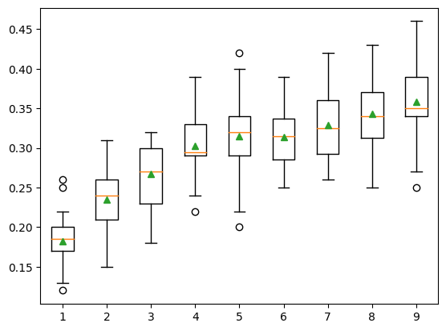
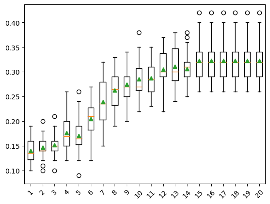
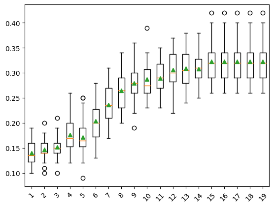

from numpy import mean, std
from matplotlib import pyplot
from sklearn.datasets import make_classification
from sklearn.naive_bayes import GaussianNB
from sklearn.pipeline import Pipeline
from sklearn.model_selection import cross_val_score, RepeatedStratifiedKFold
from sklearn.discriminant_analysis import LinearDiscriminantAnalysisDimensionality Reduction
LDA Dimensionality Reduction
Worked Example of LDA for Dimensionality
X, y = make_classification(n_samples=1000, n_features=20, n_informative=15,
n_redundant=5, random_state=7, n_classes=10)steps = [('lda', LinearDiscriminantAnalysis(n_components=5)), ('m', GaussianNB())]model = Pipeline(steps=steps)cv = RepeatedStratifiedKFold(n_splits=10, n_repeats=3, random_state=1)n_scores = cross_val_score(model, X, y, scoring='accuracy', cv=cv)print(f'Accuracy: {mean(n_scores): .3f}, {std(n_scores): .3f}')Accuracy: 0.314, 0.049How do we know that reducing 20 dimensions of input down to five is good or the best we can do?
def get_dataset():
X, y = make_classification(n_samples=1000, n_features=20, n_informative=15,
n_redundant=5, random_state=7, n_classes=10)
return X, ydef get_models():
models = dict()
for i in range(1,10):
steps = [('lda', LinearDiscriminantAnalysis(n_components=i)), ('m', GaussianNB())]
models[str(i)] = Pipeline(steps=steps)
return modelsdef evaluate_model(model, X, y):
cv = RepeatedStratifiedKFold(n_splits=10, n_repeats=3, random_state=1)
scores = cross_val_score(model, X, y, scoring='accuracy', cv=cv)
return scoresX, y = get_dataset()models = get_models()results, names = list(), list()for name, model in models.items():
scores = evaluate_model(model, X, y)
results.append(scores)
names.append(name)
print(f'{name} > {mean(scores):.3f} {std(scores): .3f}')1 > 0.182 0.032
2 > 0.235 0.036
3 > 0.267 0.038
4 > 0.303 0.037
5 > 0.314 0.049
6 > 0.314 0.040
7 > 0.329 0.042
8 > 0.343 0.045
9 > 0.358 0.056pyplot.boxplot(results, labels=names, showmeans=True)
pyplot.show()
We may choose to use an LDA transform and Naive Bayes model combination as our final model. This involves fitting the Pipeline on all available data and using the pipeline to make predictions on new data.
X, y = make_classification(n_samples=1000, n_features=20, n_informative=15,
n_redundant=5, random_state=7, n_classes=10)steps = [('lda', LinearDiscriminantAnalysis(n_components=9)), ('m', GaussianNB())]model = Pipeline(steps=steps)model.fit(X, y)Pipeline(steps=[('lda', LinearDiscriminantAnalysis(n_components=9)),
('m', GaussianNB())])In a Jupyter environment, please rerun this cell to show the HTML representation or trust the notebook. On GitHub, the HTML representation is unable to render, please try loading this page with nbviewer.org.
Pipeline(steps=[('lda', LinearDiscriminantAnalysis(n_components=9)),
('m', GaussianNB())])LinearDiscriminantAnalysis(n_components=9)
GaussianNB()
row = [[2.3548775, -1.69674567, 1.6193882, -1.19668862, -2.85422348, -2.00998376,
16.56128782, 2.57257575, 9.93779782, 0.43415008, 6.08274911, 2.12689336, 1.70100279,
3.32160983, 13.02048541, -3.05034488, 2.06346747, -3.33390362, 2.45147541, -1.23455205]]yhat = model.predict(row)print(f'Predicted Class: {yhat[0]}')Predicted Class: 6PCA Dimensionality Reduction
from sklearn.decomposition import PCA
from sklearn.linear_model import LogisticRegressionX, y = make_classification(n_samples=1000, n_features=20, n_informative=15,
n_redundant=5, random_state=7)steps = [('pca', PCA(n_components=10)), ('m', LogisticRegression())]model = Pipeline(steps=steps)cv = RepeatedStratifiedKFold(n_splits=10, n_repeats=3, random_state=1)n_scores = cross_val_score(model, X, y, scoring='accuracy', cv=cv)print(f'Accuracy: {mean(n_scores):.3f} {std(n_scores):.3f}')Accuracy: 0.816 0.034How do we know that reducing 20 dimensions of input down to 10 is good or the best we can do?
def get_models():
modesl = dict()
for i in range(1, 21):
steps = [('pca', PCA(n_components=i)), ('m', LogisticRegression())]
models[str(i)] = Pipeline(steps=steps)
return modelsX, y = get_dataset()models = get_models()results, names = list(), list()for name, model in models.items():
scores = evaluate_model(model, X, y)
results.append(scores)
names.append(name)
print(f'{name} > {mean(scores): .3f} {mean(scores): .3f}')1 > 0.140 0.140
2 > 0.147 0.147
3 > 0.152 0.152
4 > 0.176 0.176
5 > 0.171 0.171
6 > 0.205 0.205
7 > 0.240 0.240
8 > 0.263 0.263
9 > 0.274 0.274
10 > 0.285 0.285
11 > 0.287 0.287
12 > 0.305 0.305
13 > 0.311 0.311
14 > 0.306 0.306
15 > 0.323 0.323
16 > 0.323 0.323
17 > 0.323 0.323
18 > 0.323 0.323
19 > 0.323 0.323
20 > 0.323 0.323pyplot.boxplot(results, labels=names, showmeans=True)
pyplot.xticks(rotation=45)
pyplot.show()
The example below provides an example of fitting and using a final model with PCA transforms on new data.
X, y = make_classification(n_samples=1000, n_features=20, n_informative=15,
n_redundant=5, random_state=7)steps = [('pca', PCA(n_components=15)), ('m', LogisticRegression())]model = Pipeline(steps=steps)model.fit(X, y)Pipeline(steps=[('pca', PCA(n_components=15)), ('m', LogisticRegression())])In a Jupyter environment, please rerun this cell to show the HTML representation or trust the notebook. On GitHub, the HTML representation is unable to render, please try loading this page with nbviewer.org.
Pipeline(steps=[('pca', PCA(n_components=15)), ('m', LogisticRegression())])PCA(n_components=15)
LogisticRegression()
row = [[0.2929949, -4.21223056, -1.288332, -2.17849815, -0.64527665, 2.58097719,
0.28422388, -7.1827928, -1.91211104, 2.73729512, 0.81395695, 3.96973717, -2.66939799,
3.34692332, 4.19791821, 0.99990998, -0.30201875, -4.43170633, -2.82646737, 0.44916808]]yhat = model.predict(row)print(f'Predicted Class: {yhat[0]}')Predicted Class: 1SVD Dimensionality Reduction
Worked Example of SVD for Dimensionality
from sklearn.decomposition import TruncatedSVDX, y = make_classification(n_samples=1000, n_features=20, n_informative=15,
n_redundant=5, random_state=7)steps = [('svd', TruncatedSVD(n_components=10)), ('m', LogisticRegression())]model = Pipeline(steps=steps)cv = RepeatedStratifiedKFold(n_splits=10, n_repeats=3, random_state=1)n_scores = cross_val_score(model, X, y, scoring='accuracy', cv=cv)print(f'Accuracy: {mean(n_scores): .3f} {std(n_scores): .3f}')Accuracy: 0.814 0.034How do we know that reducing 20 dimensions of input down to 10 is good or the best we can do?
def get_models():
models = dict()
for i in range(1, 20):
steps = [('svd', TruncatedSVD(n_components=i)), ('m', LogisticRegression())]
models[str(i)] = Pipeline(steps=steps)
return modelsX, y = get_dataset()models = get_models()results, names = list(), list()for name, model in models.items():
scores = evaluate_model(model, X, y)
results.append(scores)
names.append(name)
print(f'{name}> {mean(scores):.3f} {std(scores):.3f}')1> 0.140 0.024
2> 0.147 0.021
3> 0.152 0.023
4> 0.177 0.032
5> 0.171 0.036
6> 0.204 0.038
7> 0.236 0.037
8> 0.265 0.035
9> 0.279 0.036
10> 0.288 0.035
11> 0.289 0.034
12> 0.306 0.037
13> 0.309 0.037
14> 0.308 0.033
15> 0.323 0.039
16> 0.323 0.039
17> 0.323 0.039
18> 0.323 0.039
19> 0.323 0.039pyplot.boxplot(results, labels=names, showmeans=True)
pyplot.xticks(rotation=45)
pyplot.show()
We may choose to use an SVD transform and logistic regression model combination as our final model.
X, y = make_classification(n_samples=1000, n_features=20, n_informative=15,
n_redundant=5, random_state=7)steps = [('svd', TruncatedSVD(n_components=15)), ('m', LogisticRegression())]model = Pipeline(steps=steps)model.fit(X, y)Pipeline(steps=[('svd', TruncatedSVD(n_components=15)),
('m', LogisticRegression())])In a Jupyter environment, please rerun this cell to show the HTML representation or trust the notebook. On GitHub, the HTML representation is unable to render, please try loading this page with nbviewer.org.
Pipeline(steps=[('svd', TruncatedSVD(n_components=15)),
('m', LogisticRegression())])TruncatedSVD(n_components=15)
LogisticRegression()
row = [[0.2929949, -4.21223056, -1.288332, -2.17849815, -0.64527665, 2.58097719,
0.28422388, -7.1827928, -1.91211104, 2.73729512, 0.81395695, 3.96973717, -2.66939799,
3.34692332, 4.19791821, 0.99990998, -0.30201875, -4.43170633, -2.82646737, 0.44916808]]yhat = model.predict(row)print(f'Predicted Class: {yhat[0]}')Predicted Class: 1